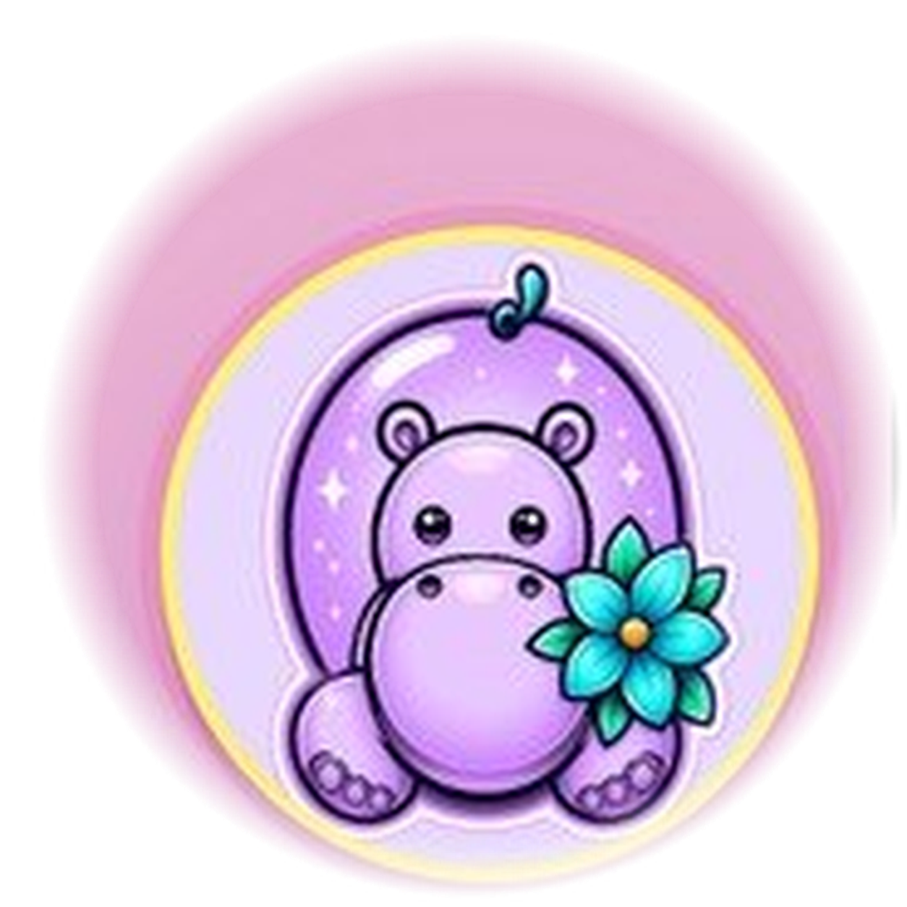

Chunky heart keychain
Corner: Yarn · Difficulty: Beginner
Materials: chunky yarn, hook, keyring, yarn needle.
A cozy starter collection for Team Crafties: twelve small, free, beginner-safe project ideas Nath can build into printable patterns, photo posts, and kind community prompts.

Quick yarn projects for visitors who want a tiny win before learning bigger stitches.
Corner: Yarn · Difficulty: Beginner
Materials: chunky yarn, hook, keyring, yarn needle.
Corner: Yarn · Difficulty: Beginner
Materials: yarn scraps, hook or needles, scissors.
Corner: Yarn · Difficulty: Beginner
Materials: yarn, crochet hook, stitch marker.
Corner: Yarn / kids-friendly crafts · Difficulty: Beginner
Materials: yarn scraps, cardboard, sticks or pipe cleaners.
Printable and hand-drawn paper ideas that match the Team Crafties kindness-first spirit.
Corner: Cards · Difficulty: Beginner
Materials: cardstock, markers, ribbon or string.
Corner: Cards / drawing · Difficulty: Beginner
Materials: blank card, pen, pink or purple marker.
Corner: Cards · Difficulty: Beginner
Materials: paper scraps, glue stick, postcard backing.
Corner: Cards / community kindness · Difficulty: Beginner
Materials: small paper squares, pen, stickers.
Small giftable projects for birthdays, teacher notes, neighbour surprises, and cozy swaps.
Corner: Sewing · Difficulty: Beginner
Materials: fabric scrap, needle, thread, dried lavender.
Corner: Soap / paper craft · Difficulty: Beginner
Materials: soap bar, paper strip, twine, label.
Corner: Painting · Difficulty: Beginner
Materials: smooth pebble, acrylic paint, sealant.
Corner: Jewelry · Difficulty: Beginner
Materials: elastic cord, beads, scissors.